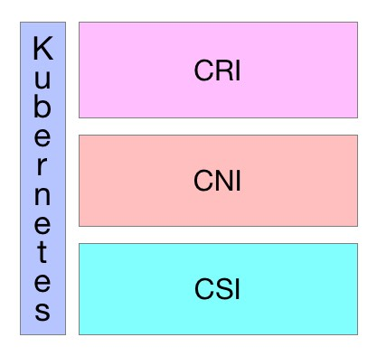

开放接口
Table of Contents
Kubernetes作为云原生应用的基础调度平台，相当于云原生的操作系统，为了便于系统的扩展，Kubernetes中开放的以下接口，可以分别对接不同的后端，来实现自己的业务逻辑：
- CRI （Container Runtime Interface）： 容器运行 接口，提供 计算 资源
- CNI （Container Network Interface）： 容器网络 接口，提供 网络 资源
- CSI （Container Storage Interface）： 容器存储 接口，提供 存储 资源
以上三种资源相当于一个分布式操作系统的最基础的几种资源类型，而Kuberentes是将他们粘合在一起的纽带

CRI
CRI中定义了 容器 和 镜像 的服务的接口，因为容器运行时与镜像的生命周期是彼此隔离的，因此需要定义两个服务。该接口使用 Protocol Buffer ，基于 gRPC ，在Kubernetes v1.10+版本中是在 pkg/kubelet/apis/cri/runtime/v1alpha2 的 api.proto 中定义的
CRI架构
Container Runtime实现了 CRI gRPC Server ，包括 RuntimeService 和 ImageService ：
- 该gRPC Server需要监听 本地的Unix socket
kubelet 则作为 gRPC Client 运行

启用CRI
除非集成了rktnetes，否则CRI都是被默认启用了，从Kubernetes1.7版本开始，旧的预集成的docker CRI已经被移除
要想启用CRI只需要在kubelet的启动参数重传入此参数： –container-runtime-endpoint 远程运行时服务的端点：
- 当前Linux上支持unix socket
- windows上支持tcp
例如：unix:///var/run/dockershim.sock、 tcp://localhost:373，默认是unix:///var/run/dockershim.sock，即默认使用本地的docker作为容器运行时
CRI接口
Kubernetes 1.9中的CRI接口在api.proto中的定义如下：
// Runtime service defines the public APIs for remote container runtimes service RuntimeService { // Version returns the runtime name, runtime version, and runtime API version. rpc Version(VersionRequest) returns (VersionResponse) {} // RunPodSandbox creates and starts a pod-level sandbox. Runtimes must ensure // the sandbox is in the ready state on success. rpc RunPodSandbox(RunPodSandboxRequest) returns (RunPodSandboxResponse) {} // StopPodSandbox stops any running process that is part of the sandbox and // reclaims network resources (e.g., IP addresses) allocated to the sandbox. // If there are any running containers in the sandbox, they must be forcibly // terminated. // This call is idempotent, and must not return an error if all relevant // resources have already been reclaimed. kubelet will call StopPodSandbox // at least once before calling RemovePodSandbox. It will also attempt to // reclaim resources eagerly, as soon as a sandbox is not needed. Hence, // multiple StopPodSandbox calls are expected. rpc StopPodSandbox(StopPodSandboxRequest) returns (StopPodSandboxResponse) {} // RemovePodSandbox removes the sandbox. If there are any running containers // in the sandbox, they must be forcibly terminated and removed. // This call is idempotent, and must not return an error if the sandbox has // already been removed. rpc RemovePodSandbox(RemovePodSandboxRequest) returns (RemovePodSandboxResponse) {} // PodSandboxStatus returns the status of the PodSandbox. If the PodSandbox is not // present, returns an error. rpc PodSandboxStatus(PodSandboxStatusRequest) returns (PodSandboxStatusResponse) {} // ListPodSandbox returns a list of PodSandboxes. rpc ListPodSandbox(ListPodSandboxRequest) returns (ListPodSandboxResponse) {} // CreateContainer creates a new container in specified PodSandbox rpc CreateContainer(CreateContainerRequest) returns (CreateContainerResponse) {} // StartContainer starts the container. rpc StartContainer(StartContainerRequest) returns (StartContainerResponse) {} // StopContainer stops a running container with a grace period (i.e., timeout). // This call is idempotent, and must not return an error if the container has // already been stopped. // TODO: what must the runtime do after the grace period is reached? rpc StopContainer(StopContainerRequest) returns (StopContainerResponse) {} // RemoveContainer removes the container. If the container is running, the // container must be forcibly removed. // This call is idempotent, and must not return an error if the container has // already been removed. rpc RemoveContainer(RemoveContainerRequest) returns (RemoveContainerResponse) {} // ListContainers lists all containers by filters. rpc ListContainers(ListContainersRequest) returns (ListContainersResponse) {} // ContainerStatus returns status of the container. If the container is not // present, returns an error. rpc ContainerStatus(ContainerStatusRequest) returns (ContainerStatusResponse) {} // UpdateContainerResources updates ContainerConfig of the container. rpc UpdateContainerResources(UpdateContainerResourcesRequest) returns (UpdateContainerResourcesResponse) {} // ExecSync runs a command in a container synchronously. rpc ExecSync(ExecSyncRequest) returns (ExecSyncResponse) {} // Exec prepares a streaming endpoint to execute a command in the container. rpc Exec(ExecRequest) returns (ExecResponse) {} // Attach prepares a streaming endpoint to attach to a running container. rpc Attach(AttachRequest) returns (AttachResponse) {} // PortForward prepares a streaming endpoint to forward ports from a PodSandbox. rpc PortForward(PortForwardRequest) returns (PortForwardResponse) {} // ContainerStats returns stats of the container. If the container does not // exist, the call returns an error. rpc ContainerStats(ContainerStatsRequest) returns (ContainerStatsResponse) {} // ListContainerStats returns stats of all running containers. rpc ListContainerStats(ListContainerStatsRequest) returns (ListContainerStatsResponse) {} // UpdateRuntimeConfig updates the runtime configuration based on the given request. rpc UpdateRuntimeConfig(UpdateRuntimeConfigRequest) returns (UpdateRuntimeConfigResponse) {} // Status returns the status of the runtime. rpc Status(StatusRequest) returns (StatusResponse) {} } // ImageService defines the public APIs for managing images. service ImageService { // ListImages lists existing images. rpc ListImages(ListImagesRequest) returns (ListImagesResponse) {} // ImageStatus returns the status of the image. If the image is not // present, returns a response with ImageStatusResponse.Image set to // nil. rpc ImageStatus(ImageStatusRequest) returns (ImageStatusResponse) {} // PullImage pulls an image with authentication config. rpc PullImage(PullImageRequest) returns (PullImageResponse) {} // RemoveImage removes the image. // This call is idempotent, and must not return an error if the image has // already been removed. rpc RemoveImage(RemoveImageRequest) returns (RemoveImageResponse) {} // ImageFSInfo returns information of the filesystem that is used to store images. rpc ImageFsInfo(ImageFsInfoRequest) returns (ImageFsInfoResponse) {} }
这其中包含了两个gRPC服务：
- RuntimeService： 容器 和 Sandbox 运行时管理
- ImageService：提供了从 镜像仓库 拉取 、 查看 、和 移除 镜像的RPC
当前支持的CRI后端
最初在使用Kubernetes时通常会默认使用Docker作为容器运行时，其实从Kubernetes 1.5开始已经开始支持CRI，目前是处于Alpha版本
通过CRI接口可以指定使用其它容器运行时作为Pod的后端，目前支持 CRI 的后端有：
- cri-o：cri-o是Kubernetes的CRI标准的实现，并且允许Kubernetes间接使用OCI兼容的容器运行时，可以把cri-o看成Kubernetes使用OCI兼容的容器运行时的中间层
- cri-containerd：基于Containerd的Kubernetes CRI 实现
- rkt：由CoreOS主推的用来跟docker抗衡的容器运行时
- frakti：基于hypervisor的CRI
- docker：kuberentes最初就开始支持的容器运行时，目前还没完全从kubelet中解耦，docker公司同时推广了OCI标准
CRI是由SIG-Node来维护的
当前通过CRI-O间接支持CRI的后端
当前同样存在一些只实现了OCI标准的容器，但是它们可以通过CRI-O来作为Kubernetes的容器运行
CRI-O是Kubernetes的CRI标准的实现，并且允许Kubernetes间接使用OCI兼容的容器运行时：
- Clear Containers：由Intel推出的兼容OCI容器运行时，可以通过CRI-O来兼容CRI
- Kata Containers：符合OCI规范，可以通过CRI-O或Containerd CRI Plugin来兼容CRI
- gVisor：由谷歌推出的容器运行时沙箱(Experimental)，可以通过CRI-O来兼容CRI
CNI
CNI（Container Network Interface）是 CNCF 旗下的一个项目，由一组用于配置 Linux 容器的 网络接口 的 规范 和 库 组成，同时还包含了一些 插件 。CNI 仅关心容器创建时的网络分配，和当容器被删除时释放网络资源
Kubernetes 源码的 vendor/github.com/containernetworking/cni/libcni 目录中已经包含了 CNI 的代码，也就是说 kubernetes 中已经内置了 CNI
接口定义
CNI 的接口中包括以下几个方法：
type CNI interface { AddNetworkList (net *NetworkConfigList, rt *RuntimeConf) (types.Result, error) DelNetworkList (net *NetworkConfigList, rt *RuntimeConf) error AddNetwork (net *NetworkConfig, rt *RuntimeConf) (types.Result, error) DelNetwork (net *NetworkConfig, rt *RuntimeConf) error }
该接口只有四个方法：
- 添加网络
- 删除网络
- 添加网络列表
- 删除网络列表
设计考量
CNI 设计的时候考虑了以下问题：
- 容器运行时必须在调用任何插件之前为容器创建一个 新的网络命名空间
- 然后，运行时必须确定这个容器应属于哪个网络，并为每个网络确定 哪些插件必须被执行
- 网络配置采用 JSON 格式，可以很容易地存储在文件中
- 网络配置包括必填字段，如 name 和 type 以及插件（类型）
- 网络配置允许字段在调用之间改变值。为此，有一个可选的字段 args，必须包含不同的信息
- 容器运行时必须按 顺序 为每个网络执行相应的插件，将容器添加到每个网络中
- 在完成容器生命周期后，运行时必须以 相反的顺序 执行插件（相对于执行添加容器的顺序）以将容器与网络断开连接
- 容器运行时不能为同一容器调用并行操作，但可以为不同的容器调用并行操作
容器运行时必须为容器订阅 ADD 和 DEL 操作，这样 ADD 后面总是跟着相应的 DEL
DEL 可能跟着额外的 DEL，但是，插件应该允许处理多个 DEL（即插件 DEL 应该是幂等的）
- 容器必须由 ContainerID 唯一标识。存储状态的插件应该使用（ 网络名称，容器 ID ）的主键来完成
运行时不能调用同一个网络名称或容器 ID 执行两次 ADD（没有相应的 DEL）
换句话说，给定的容器 ID 必须只能添加到特定的网络一次
CNI 插件
CNI 插件必须实现一个 可执行文件 ，这个文件可以被容器管理系统（例如 rkt 或 Kubernetes）调用。CNI 插件负责：
将网络接口插入容器网络命名空间
例如，veth 对的一端
在主机上进行任何必要的改变
例如将 veth 的另一端连接到网桥
- 将 IP 分配给接口
- 通过调用适当的 IPAM 插件来设置与 “IP 地址管理” 部分一致的路由
操作
CNI 插件必须支持以下操作
将容器添加到网络
参数：
- 版本：调用者正在使用的 CNI 规范（容器管理系统或调用插件）的版本
- 容器 ID：由运行时分配的容器的唯一明文标识符。一定不能是空的
网络命名空间路径：要添加的网络名称空间的路径
即 /proc/[pid]/ns/net 或绑定挂载 / 链接
- 网络配置：描述容器可以加入的网络的 JSON 文档
- 额外的参数：这提供了一个替代机制，允许在每个容器上简单配置 CNI 插件
- 容器内接口的名称：这是应该分配给容器（网络命名空间）内创建的接口的名称，因此它必须符合 Linux 接口名称上的标准限制
结果：
- 接口列表：根据插件的不同，这可以包括沙箱（例如容器或管理程序）接口名称和 / 或主机接口名称，每个接口的硬件地址以及接口所在的沙箱（如果有的话）的详细信息
- 分配给每个接口的 IP 配置：分配给沙箱和 / 或主机接口的 IPv4 和 / 或 IPv6 地址，网关和路由
- DNS 信息：包含 nameserver、domain、search domain 和 option 的 DNS 信息的字典
从网络中删除容器
参数：
- 版本调用者：正在使用的 CNI 规范（容器管理系统或调用插件）的版本
- 容器 ID
- 网络命名空间路径
- 网络配置
- 额外的参数
- 上面定义的容器内的接口的名称。
所有参数应与传递给相应的添加操作的参数相同 删除操作应释放配置的网络中提供的 containerid 拥有的所有资源
报告版本
参数：无
结果：插件支持的 CNI 规范版本信息
{“cniVersion”：“0.3.1”，// 此输出使用的 CNI 规范的版本
“supportedVersions”：[“0.1.0”，“0.2.0”，“0.3.0”，“0.3.1”] // 此插件支持的 CNI 规范版本列表
}
IP 分配
作为容器网络管理的一部分，CNI 插件需要为接口分配（并维护）IP 地址，并安装与该接口相关的所有必要路由 这给了 CNI 插件很大的灵活性，但也给它带来了很大的负担 众多的 CNI 插件需要编写相同的代码来支持用户需要的多种 IP 管理方案（例如 dhcp、host-local）
为了减轻负担，使 IP 管理策略与 CNI 插件类型解耦，定义了 IP 地址管理插件 （IPAM 插件）
CNI 插件的职责是在执行时恰当地调用 IPAM 插件
IPAM 插件
像 CNI 插件一样，调用 IPAM 插件的可执行文件，可执行文件位于预定义的路径列表中，通过 CNI_PATH 指示给 CNI 插件 IPAM 插件必须接收所有传入 CNI 插件的相同环境变量。就像 CNI 插件一样，IPAM 插件通过 stdin 接收网络配置
- IPAM 插件必须确定接口 IP/subnet，网关和路由，并将此信息返回到 “主” 插件来应用配置
- IPAM 插件可以通过协议（例如 dhcp）、存储在本地文件系统上的数据、网络配置文件的 “ipam” 部分或上述的组合来获得信息
可用插件
Main：接口创建
- bridge ：创建网桥，并添加主机和容器到该网桥
- ipvlan ：在容器中添加一个 ipvlan 接口
- loopback ：创建一个回环接口
- macvlan ：创建一个新的 MAC 地址，将所有的流量转发到容器
- ptp ：创建 veth 对
- vlan ：分配一个 vlan 设备
IPAM
- dhcp ：在主机上运行守护程序，代表容器发出 DHCP 请求
- host-local ：维护分配 IP 的本地数据库
其他
- flannel ：根据 flannel 的配置文件创建接口
- tuning：调整现有接口的 sysctl 参数
- portmap ：一个基于 iptables 的 portmapping 插件。将端口从主机的地址空间映射到容器
CSI
CSI 代表容器存储接口
CSI 试图建立一个行业标准接口的规范，借助 CSI 容器编排系统（CO）可以将任意存储系统暴露给自己的容器工作负载
csi 卷类型 是一种 out-tree （即跟其它存储插件在同一个代码路径下，随 Kubernetes 的代码同时编译的） 的 CSI 卷插件，用于 Pod 与在同一节点上运行的外部 CSI 卷驱动程序交互。部署 CSI 兼容卷驱动后，用户可以使用 csi 作为卷类型来挂载驱动提供的存储
CSI 持久化卷支持是在 Kubernetes v1.9 中引入的，作为一个 alpha 特性，必须由集群管理员明确启用 换句话说，集群管理员需要在 apiserver、controller-manager 和 kubelet 组件的 “--feature-gates =” 标志中加上 “CSIPersistentVolume = true”
CSI 持久化卷具有以下字段可供用户指定：
- driver ：一个字符串值，指定要使用的卷驱动程序的名称。必须少于 63 个字符，并以一个字符开头。驱动程序名称可以包含 '.' '-' '_' 或数字
- volumeHandle ：一个字符串值，唯一标识从 CSI 卷插件的 CreateVolume 调用返回的卷名。随后在卷驱动程序的所有后续调用中使用卷句柄来引用该卷
- readOnly ：一个可选的布尔值，指示卷是否被发布为只读。默认是 false
使用
动态配置
可以通过为 CSI 创建插件 StorageClass 来支持动态配置的 CSI Storage 插件启用自动创建/删除
例如，以下 StorageClass 允许通过名为 com.example.team/csi-driver 的 CSI Volume Plugin 动态创建 “fast-storage” Volume
kind: StorageClass apiVersion: storage.k8s.io/v1 metadata: name: fast-storage provisioner: com.example.team/csi-driver parameters: type: pd-ssd
要触发动态配置，请创建一个 PersistentVolumeClaim 对象
例如，下面的 PersistentVolumeClaim 可以使用上面的 StorageClass 触发动态配置
apiVersion: v1 kind: PersistentVolumeClaim metadata: name: my-request-for-storage spec: accessModes: - ReadWriteOnce resources: requests: storage: 5Gi storageClassName: fast-storage
当动态创建 Volume 时：
- 通过 CreateVolume 调用，将参数 type：pd-ssd 传递给 CSI 插件 com.example.team/csi-driver
- 作为响应， 外部 Volume 插件 会 创建 一个 新 Volume ，然后自动创建一个 PersistentVolume 对象 来 对应 前面的 PVC
- Kubernetes 会将新的 PersistentVolume 对象 绑定 到 PersistentVolumeClaim，使其可以使用
如果 fast-storage StorageClass 被标记为默认值，则不需要在 PersistentVolumeClaim 中包含 StorageClassName，它将被默认使用
预配置 Volume
可以通过手动创建一个 PersistentVolume 对象来展示现有 Volumes，从而在 Kubernetes 中暴露预先存在的 Volume
例如，暴露属于 com.example.team/csi-driver 这个 CSI 插件的 existingVolumeName Volume
apiVersion: v1 kind: PersistentVolume metadata: name: my-manually-created-pv spec: capacity: storage: 5Gi accessModes: - ReadWriteOnce persistentVolumeReclaimPolicy: Retain csi: driver: com.example.team/csi-driver volumeHandle: existingVolumeName readOnly: false
附着和挂载
可以在任何的 pod 或者 pod 的 template 中引用绑定到 CSI volume 上的 PersistentVolumeClaim：
kind: Pod apiVersion: v1 metadata: name: my-pod spec: containers: - name: my-frontend image: dockerfile/nginx volumeMounts: - mountPath: "/var/www/html" name: my-csi-volume volumes: - name: my-csi-volume persistentVolumeClaim: claimName: my-request-for-storage
当一个引用了 CSI Volume 的 pod 被调度时， Kubernetes 将针对外部 CSI 插件进行相应的操作，以确保特定的 Volume 被 attached、mounted， 并且能被 pod 中的容器使用
创建 CSI 驱动
Kubernetes 尽可能少地指定 CSI Volume 驱动程序的打包和部署规范
最低要求文件还包含概述部分，提供了在 Kubernetes 上部署任意容器化 CSI 驱动程序的建议机制 存储提供商可以运用这个机制来简化 Kubernetes 上容器式 CSI 兼容 Volume 驱动程序的部署
作为推荐部署的一部分，Kubernetes 团队提供以下 sidecar（辅助）容器：
- External-attacher: 可监听 Kubernetes VolumeAttachment 对象并触发 ControllerPublish 和 ControllerUnPublish 操作的 sidecar 容器，通过 CSI endpoint 触发
- External-provisioner: 监听 Kubernetes PersistentVolumeClaim 对象的 sidecar 容器，并触发对 CSI 端点的 CreateVolume 和DeleteVolume 操作
- Driver-registrar(DEPRECATED): 使用 Kubelet（将来）注册 CSI 驱动程序的 sidecar 容器，并将 NodeId （通过 GetNodeID 调用检索到 CSI endpoint）添加到 Kubernetes Node API 对象的 annotation 里面
- Cluster Driver Registrar: 创建 CSIDriver 这个集群范围的 CRD 对象
- Node Driver Registrar: 替代 Driver-registrar
存储供应商完全可以使用这些组件来为其插件构建 Kubernetes Deployment，同时让它们的 CSI 驱动程序完全意识不到 Kubernetes 的存在 另外 CSI 驱动完全是由第三方存储供应商自己维护的，在 kubernetes 1.9 版本中 CSI 还处于 alpha 版本